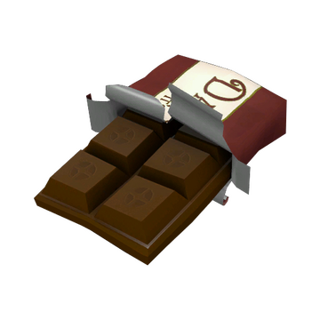

Welcome to the Dalohoh's Bar Recipe!
This is a very large chocolate bar, share with friend.
Ingredients:
Scrap Metal, Hints of Battery Acid, Raw Cocoa, and Panko Bread Crumbs
Instructions:
- Collect at least 2 tonnes of scrap metal from your local compactor(The more the better)
- Melt the scrap metal in a large crucible
- Add 16 gallons of Acid to your concoction
- Grab a new bowl, and add the Cocoa Beans. 4-8
- Deflesh the Cocoa beans and but the raw beans in a mixer.
- Pour your Panko into the cocoa flesh and take out the cocoa mix
- Let the Acid sit overnight
- Mix the acid and cocoa powder until colour changes
- Put Mix in the oven for 2 hours at 450 farenheit
- Once done, put the cocoa flesh on top of the mix, and you should be finished!
This is what your bar should look like!

Return to top